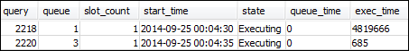
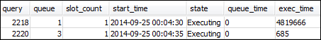

Seção 3: Rotear consultas para filas com base em grupos de usuários e grupos de consultas
Agora, o cluster está associado a um novo grupo de parâmetros e o WLM está configurado. Em seguida, execute algumas consultas para ver como o Amazon Redshift roteia as consultas em filas para processamento.
Etapa 1: Visualizar a configuração da fila de consulta no banco de dados
Primeiro, verifique se o banco de dados tem a configuração do WLM esperada.
Como visualizar a configuração da fila de consultas
-
Abra RSQL e execute a consulta a seguir. A consulta usa a visualização WLM_QUEUE_STATE_VW criada em Etapa 1: Criar a visualização WLM_QUEUE_STATE_VW. Se já tiver uma sessão conectada ao banco de dados antes da reinicialização do cluster, é necessário reconectar.
select * from wlm_queue_state_vw;Este é um resultado de exemplo.

Compare esses resultados com os resultados recebidos por você em Etapa 1: Criar a visualização WLM_QUEUE_STATE_VW. Observe que agora existem duas filas adicionais. Agora a fila 1 é a fila do grupo de consultas de teste, e a fila 2 é a fila do grupo de usuários administradores.
Agora a fila 3 é a padrão. A última fila na lista sempre é a fila padrão. Essa é a fila para a qual consultas são roteadas por padrão caso nenhum grupo de usuários ou de consultas seja especificado em uma consulta.
-
Execute a consulta a seguir para confirmar que a consulta agora é executada na fila 3.
select * from wlm_query_state_vw;Este é um resultado de exemplo.

Etapa 2: Executar uma consulta usando a fila de grupos de consultas
Como executar uma consulta usando a fila de grupos de consultas
-
Execute a consulta a seguir a fim de roteá-la para o grupo de consultas
test.set query_group to test; select avg(l.priceperticket*s.qtysold) from listing l, sales s where l.listid <40000; -
Na outra janela RSQL, execute a consulta a seguir.
select * from wlm_query_state_vw;Este é um resultado de exemplo.

A consulta foi roteada para o grupo de consultas de teste, que é a fila 1 agora.
-
Selecione tudo na visualização de estado da fila.
select * from wlm_queue_state_vw;Você verá um resultado semelhante ao seguinte.

-
Agora redefina o grupo de consultas e reexecute a consulta longa:
reset query_group; select avg(l.priceperticket*s.qtysold) from listing l, sales s where l.listid <40000; -
Execute as consultas em relação às visualizações para ver os resultados.
select * from wlm_queue_state_vw; select * from wlm_query_state_vw;Estes são resultados de exemplo.


O resultado deve ser a consulta em execução na fila 3 novamente.
Etapa 3: Criar um grupo e um usuário de banco de dados
Para executar todas as consultas nessa fila, você precisa criar o grupo de usuários no banco de dados e adicionar um usuário ao grupo. Depois, faça logon com o RSQL usando as credenciais do novo usuário e execute consultas. É necessário executar consultas como um superusuário, como usuário administrador, para criar usuários de banco de dados.
Como criar um usuário do banco de dados e um grupo de usuários
-
No banco de dados, crie um nome do usuário do banco de dados
adminwlmexecutando o comando a seguir em uma janela RSQL.create user adminwlm createuser password '123Admin'; -
Em seguida, execute os comandos a seguir para criar o novo grupo de usuários e adicionar o novo usuário
adminwlma ele.create group admin; alter group admin add user adminwlm;
Etapa 4: Executar uma consulta usando a fila de grupos de usuários
Na sequência, execute uma consulta e roteie-a para a fila do grupo de usuários. Você faz isso quando quiser rotear a consulta para uma fila configurada para processar o tipo de consulta que deseja executar.
Como executar uma consulta usando a fila de grupos de usuários
-
Na janela RSQL 2, execute as consultas a seguir a fim de alternar para a conta
adminwlme executar uma consulta desse usuário.set session authorization 'adminwlm'; select avg(l.priceperticket*s.qtysold) from listing l, sales s where l.listid <40000; -
Na janela RSQL 1, execute a consulta a seguir para ver a fila de consultas para a qual as consultas são roteadas.
select * from wlm_query_state_vw; select * from wlm_queue_state_vw;Estes são resultados de exemplo.


A fila em que essa consulta foi executada está na fila 2, a fila de usuários
admin. Sempre que você executar consultas conectado como esse usuário, elas serão executadas na fila 2, a menos que especifique um grupo de consultas diferente a ser usado. A fila escolhida depende das regras de atribuição de fila. Para obter mais informações, consulte Regras de atribuição de fila do WLM. -
Agora execute a consulta a seguir na janela RSQL 2.
set query_group to test; select avg(l.priceperticket*s.qtysold) from listing l, sales s where l.listid <40000; -
Na janela RSQL 1, execute a consulta a seguir para ver a fila de consultas para a qual as consultas são roteadas.
select * from wlm_queue_state_vw; select * from wlm_query_state_vw;Estes são resultados de exemplo.
 
 -
Quando terminar, redefina o grupo de consultas.
reset query_group;